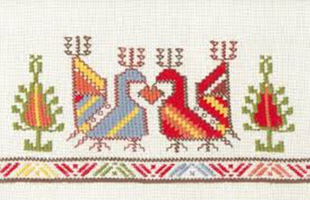

Добре дошли!
Нашият сайт e посветен на българските традиционни занаяти, символи и шевици, които съставляват важна част от културното наследство на България.
В миналото българите са били земеделски народ. Земята, която обработвали, ги дарявала със своите плодове и ги изхранвала. За да осъществяват обаче своите ежедневни дейности, те се нуждаели от инструменти и инвентар, които не можели сами да направят. Така възникнали различните занаяти, отговарящи на нуждите и търсенията на хората.
Повечето български занаяти са имали задачата да улеснят работата на полето или домакинските задачи на жената. Но имало и такива, които съчетавали прагматизма с естетиката и доставяли красота в трудното ежедневие.
